1
(a)
Use your calculator to work out the value of
\[ {24.1 \over {8.4-7.8}} - 6.2^2 \]
Write down all the figures on your calculator display.
(2)
(b)
Give your answer to part (a) correct to 3 significant figures.
(1)
2
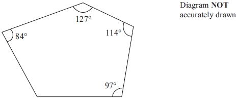
Four of the angles of a pentagon are 97°, 114°, 127° and 84°.
Work out the size of the fifth angle.
(4)
3
(a)
Factorise \( w^2 - 9w \).
(2)
(b)
Solve \( 5x - 1 = 2x - 7 \).
(3)
(c)
Expand and simplify \( (y - 7)(y + 3) \).
(2)
4
Every morning, Samath has one glass of fruit juice with his breakfast.
He chooses at random orange juice or pineapple juice or mango juice.
The probability that he chooses orange juice is 0.6
The probability that he chooses pineapple juice is 0.3
(a)
Work out the probability that he chooses mango juice.
(2)
(b)
There are 30 days in April.
Work out an estimate for the number of days in April on which Samath chooses
orange juice.
(2)
5
Show that \(\displaystyle {5 \over 6} - {3 \over 4} = {1 \over 12} \)
(2)
(a)
Describe fully the single transformation which maps triangle \( \mathbf{P} \) onto triangle \( \mathbf{Q} \).
(3)
(b)
Reflect triangle \( \mathbf{Q} \) in the line \( y = x \).
Label the new triangle \( \mathbf{R} \).
(2)
7
The perimeter of a triangle is 90 cm.
The lengths of the sides of the triangle are in the ratio 3 : 5 : 7.
Work out the length of the longest side of the triangle.
(3)
8
\( \mathscr{E} = \{2, 3, 4, 5, 6, 7, 8, 9, 10, 11, 12\} \)
\( A = \{\mathrm{odd \ numbers}\} \)
\( P = \{\mathrm{prime \ numbers}\} \)
List the members of the set
9
Ella invested $8000 for 3 years at 5% per annum compound interest.
Calculate the value of her investment at the end of 3 years.
(3)
10
This rule can be used to work out the fare, in dirhams, for a taxi journey in Dubai.
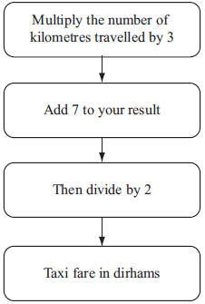
Find a formula for the fare, \( C \) dirhams, for a taxi journey of \( d \) kilometres.
(3)
11
The table shows information about the weights of 80 parcels.
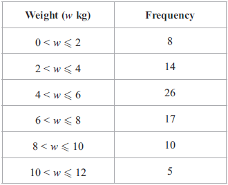
(a)
Work out an estimate for the total weight of the 80 parcels.
(3)
(b)
Complete the cumulative frequency table.
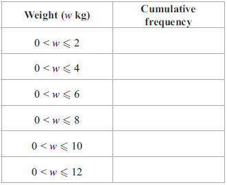
(1)
(d)
Use the graph to find an estimate for the number of parcels which weighed less than 5.2 kg.
(2)
12
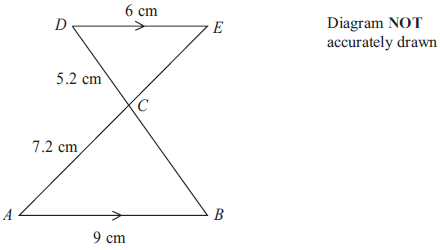
AB is parallel to DE.
ACE and BCD are straight lines.
AB = 9 cm.
AC = 7.2 cm.
CD = 5.2 cm.
DE = 6 cm.
(a)
Calculate the length of BC.
(2)
(b)
Calculate the length of CE.
(2)
13
Solve \(\displaystyle {{2x+1} \over 4} + {{x-1} \over 5} = 2 \)
(4)
14
\( y = 1.8 \) correct to 1 decimal place.
Calculate the lower bound for the value of \( 4y + 1 \).
(2)
15
(a)
Here is a shape made from a rectangle and a semicircle.
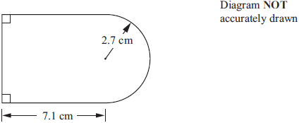
The length of the rectangle is 7.1 cm.
The radius of the semicircle is 2.7 cm.
Work out the area of the shape.
Give your answer correct to 3 significant figures.
(4)
(b)
Here is another shape made from a rectangle and a semicircle.
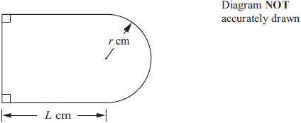
The length of the rectangle is \( L \) cm.
The radius of the semicircle is \( r \) cm.
The perimeter, \( P \) cm, of the shape is given by the formula
\[ P = \pi r + 2L + 2r \]
Make r the subject of the formula \( P = \pi r + 2L + 2r \).
(3)
16
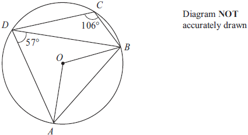
A, B, C and D are points on a circle, centre O.
Angle ADB = 57°.
Angle BCD = 106°.
(a)
(i)
Calculate the size of angle AOB.
(1)
(ii)
Give a reason for your answer.
(1)
(b)
Calculate the size of angle BAD.
(1)
17
Here are seven counters.
Each counter has a number on it.

Ali puts the seven counters in a bag.
He takes, at random, a counter from the bag and does not replace the counter.
He then takes, at random, a second counter from the bag.
Calculate the probability that
(i)
the number on the second counter is 2 more than the number on the first counter,
(2)
(ii)
the number on the second counter is 1 more than the number on the first counter.
(3)
18
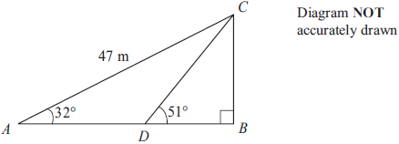
Triangle ABC is right-angled at B.
Angle BAC = 32°.
AC = 47 m.
D is the point on AB such that angle BDC = 51°.
Calculate the length of BD.
Give your answer correct to 3 significant figures.
(5)
19
P is directly proportional to the cube of Q.
When Q = 15, P = 1350
(a)
Find a formula for P in terms of Q.
(3)
(b)
Calculate the value of P when Q = 20
(1)
20
\( x = a \times 10^n \) where \( n \) is an integer and \( \sqrt{10} \leq a < 10 \)
Find, in standard form, an expression for \( x^2 \).
Give your expression as simply as possible.
(3)
21
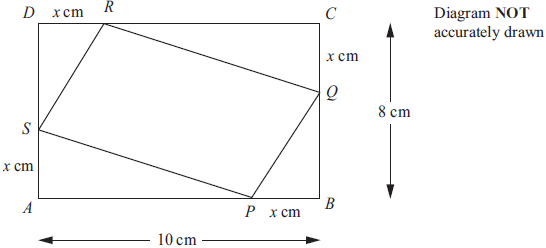
\( ABCD \) is a rectangle.
\( AB \) = 10 cm.
\( BC \) = 8 cm.
\( P \), \( Q \), \( R \) and \( S \) are points on the sides of the rectangle.
\( BP \) = \( CQ \) = \( DR \) = \( AS \) = \( x \) cm.
(a)
Show that the area, \( A \) cm2, of the quadrilateral \( PQRS \) is given by the formula
\[ A = 2x^2 - 18x + 80 \]
(3)
(b)
For \( A = 2x^2 - 18x + 80 \)
(i)
find \(\displaystyle {\mathrm{d}A \over \mathrm{d}x} \),
(2)
(ii)
find the value of \( x \) for which \( A \) is a minimum.
(2)
(iii)
Explain how you know that \( A \) is a minimum for this value of \( x \).
(1)
22
Solve the simultaneous equations
\[ y = 2x - 3 \]
\[ x^2 + y^2 = 2 \]
(6)
23
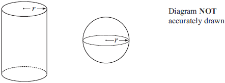
The diagram shows a solid cylinder and a solid sphere.
The cylinder has radius \( r \).
The sphere has radius \( r \).
Given that \(\displaystyle \frac{\mathrm{\mathbf{Total} \ surface \ area \ of \ cylinder}}{\mathrm{Surface \ area \ of \ sphere}} = 2 \)
find the value of \(\displaystyle \frac{\mathrm{Volume \ of \ cylinder}}{\mathrm{Volume \ of \ sphere}} \)
(5)